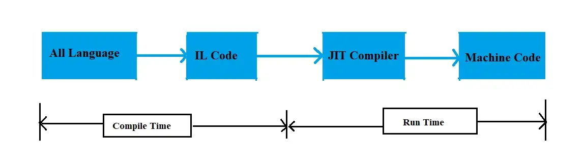

Interview Questions & Answers
General
-
Load Balancing
Distribute incoming network traffic across a group of backend servers
-
What is a Cookie ?
A cookie is a piece of data that is stored on a client site to be accessed by your browser. Cookies are saved as key/value pairs
-
Caching
A technique that stores a copy of a given resource and serves it back when requested
-
Distributed Cache
Distributed cache is a cache shared by multiple apps servers
Advantages- One place to update
- Easy to maintain
Disadvantages
- Single point of failure
-
SOLID Principles
-
S stand for Single-responsiblity: A class should have one and only one reason to change, meaning that a class should have only one job.
Before: class UserService { void Register(); void SendEmail() } After: class UserService { void Register(); } class EmailService { bool void SendEmail() } - O stand fo Open/Close: Objects or entities should be open for extension but closed for modification
- L stand for Liskov
-
I stand for Interface Segregation: Reduce the side effects and frequency of required changes by splitting the interface into multiple, independent parts.
Before: public interface IOrder { void AddToCart(); void CCProcess(); } public class OnlineOrder : IOrder { public void AddToCart() {} public void CCProcess() {} } After: public interface IOrder { void AddToCart(); } public interface IOnlineOrder { void CCProcess(); } public class OnlineOrder : IOrder, IOnlineOrder { public void AddToCart() {} public void CCProcess() {} } - D stand for Dependency Inversion: Entities must depend on abstractions, not on concretions. High-level module must not depend on the low-level module, but they should depend on abstractions.
-
S stand for Single-responsiblity: A class should have one and only one reason to change, meaning that a class should have only one job.
-
Messaging
A message queue is a queue of messages sent between applications
Benefits of using Caching: Asynchronous communication which means that the endpoints that are producing and consuming messages interact with the queue, not each other. Producers can add requests to the queue without waiting for them to be processed. Consumers process messages only when they are available
.NET
-
What is IL Code & JIT (Just In Time Compiler) ?
Different user have different machine configuration and different operating system whose unknown to visual studio. That is the main problem. To avoid this problem Microsoft Creates a code that is called as IL Code.
- IL code (intermediate code) or half compiled code, it’s creates at compile time.
- When this program will run at user system, this run time IL code is converted into machine code by JIT (just-in-time) compiler.
- JIT Compiler converted IL Code into Machine Code.

-
What is the difference between Continue & Break statement ?
- Break statement jump out of the loop
- Continue statement skips just an iteration and will continue from the next one
-
Why do we need IEnumrable?
- IEnumrable helps to iterate over a collection without knowing the actual type
- IEnumrable acts like an iterable collection abstraction over any type of collection
-
var & dynamic
- var is statically Type and check during compile time
- dynamic executes and check during runtime
-
Stack & Heap
- Stack memory stores primitive data types (int, bool, double,...).
- Heap stores data types like string and object
-
Value Types & Reference Types
- Value types contain actual data. Value types are stored on stack and Value types are primitive data types
- Reference types contain pointers and the pointers point to the actual data. Reference types are all objects
-
Boxing & Unboxing
- Boxing is when data moves from a value type to a reference type
- Uxboxing is when data moves from a reference type to a value type
int i = 10; object y = i; // Boxing value type to a reference type int z = (int)y; // Unboxing ref => value -
Type Casting
Type casting is a mechanism where we convert one type of data to other type
- Implicit casting is when we move from lower to higher data type
- Explicit casting is when we move from higher to lower data type
int i = 10; double d = i; // implicit casting - move from lower data type to higher data type double d1 = 100.23; // explicit casting -
Array & ArrayList
- Array: fixed length and strongly typed, faster than ArrayList
- ArrayList: flexible length and not strongly typed, slower than Array because of boxing and unboxing
int[] myArr = { 1, 2, 3 }; ArrayList myArr = new ArrayList() myArr.Add(1); myArr.Add(2); myArr.Add("string"); // boxing and unboxing -
Generic
Define classes, interfaces using the type parameter and without the specific data type. Generics are used to make reusable code which decrease the code redundancy
class DataStore{ public T Data { get; set; } } DataStore store = new DataStore (); -
Extensions methods
Extension methods help to add new methods to the existing ones
-
constant and read-only
- constant variables are declared and initialized at compile time and the value can’t be changed after that
- read-only can change during runtime setting it in the constructor
-
Serialization
Serialization is the process of converting an object into a stream of bytes to store the object or transmit it to memory, a database or a file
- Memory Serialization
- Xml Serialization
-
Synchronous & Asynchronous
- When we execute synchronously, we wait for it to finish before moving to another task and it will create delay in the app
- When we execute asynchronously, we can move on to another task before it finishes
-
Delegates & Events
- Delegates is a pointer to a function and very useful as callbacks to communicate between threads
- Events are encapsulation over delegates. Events allow a class to notify other classes when something happened. Sender of the event is the publisher and the receiver is subscribers.
-
struct & class
- struct is a value type, struct cannot be abstract and struct cannot be inherited
- class is a referenced type
-
Task & Thread
- Task can return a result. But Thread doesn't
- Task supports cancellation through the use of cancellation tokens. But Thread doesn't
- A task can have multiple processes happening at the same time. Threads can only have one task running at a time
- While using thread if we get the exception in the long running method it is not possible to catch the exception in the parent function but the same can be easily caught if we are using tasks
-
Abstract & Interface
- Abstract classes are classes that cannot be instantiated. that cannot create an object. The interface is like an abstract class because all the methods inside the interface are abstract methods
- Abstract classes can have both abstract and non-abstract methods but all the methods of an interface are abstract methods
- Since abstract classes can have both abstract and non-abstract methods, we need to use the Abstract keyword to declare abstract methods. But in the interface, there is no such need
-
Reflection
Reflection in C# is used to retrieve metadata on types at runtime
SQL
Javascript
-
Undefined & Null
- Undefined means the variable has been declared but no value is assigned to it
- Null indicates absence of data
-
Hoisting
Hoisting is a mechanism where variables and function declaration are moved to the top of scope
Testing
-
Why do we must write unit test ?
Code quality, regression test, code readable, easy extend and maintenance
-
What is a Stub and Mock ?
The purpose of mocking and stubbing is to isolate your unit from its dependencies, allowing you to test your unit in a controlled environment.
-
A stub is a fake object that does not affect the outcome of the test. Its only purpose is to set up the test scenario by returning dummy test data.
Stub example: public class TransactionViewModel { //1 private IWalletController _walletController; //2 public TransactionViewModel(IWalletController walletController) { _walletController = walletController; Transactions = new List(); } public List Transactions { get; set; } //3 public async Task GetTransactions() { var transactions = await _walletController.GetTransactions(); Transactions = transactions; } } public interface IWalletController { Task { new Transaction { Id = 1, Amount = 2, Symbol = "BTC" }, new Transaction { Id = 2, Amount = 3, Symbol = "ETH" }, new Transaction { Id = 3, Amount = 7, Symbol = "ETH" }, }); return task; } } public class TransactionViewModelTests { [Fact] public async void GetTransactions_populates_Transactions_property() { //Arrange var transactionViewModel = new TransactionViewModel(new StubWalletController()); //Act await transactionViewModel.GetTransactions(); //Assert Assert.Equal(3, transactionViewModel.Transactions.Count); } } -
A mock verifies that the unit under test behaves as expected. A test’s outcome depends on the state of the mock object after executing an action.
Mock example: public interface IEmailSender { void SendEmail(string to, string subject, string mailBody); } public class OrderNotifier { private IEmailSender _emailSender; //1 public OrderNotifier(IEmailSender emailSender) { _emailSender = emailSender; } //2 public void NotifyThatOrderWasSent(string toAddress, string orderId) { var subject = $"Order {orderId} is on the way"; var mailBody = $"Hello, your order {orderId} is on the way" + Environment.NewLine; mailBody += "It should arrive in the next 2-3 days."; _emailSender.SendEmail(toAddress, subject, mailBody); } } class MockEmailSender: IEmailSender { public bool MailWasSent { get; set; } public void SendEmail(string to, string subject, string mailBody) { MailWasSent = true; } } public class MailSenderTests { [Fact] public void NotifyThatOrderWasSent_sends_email() { //Arrange var sender = new MockEmailSender(); var notifier = new OrderNotifier(sender); //Act notifier.NotifyThatOrderWasSent("test@gmail.com", "3223"); //Assert Assert.True(sender.MailWasSent); } }
-
A stub is a fake object that does not affect the outcome of the test. Its only purpose is to set up the test scenario by returning dummy test data.
System Designs
-
Monolithic
Architect an application as a single deployable unit
Advantages- Easier debugging and testing
- Simple to deploy
- Simple to develop
Disadvantages
- Understanding. When a monolithic application scales up, it becomes too complicated to understand. Also, a complex system of code within one application is hard to manage.
- Making changes. It is harder to implement changes in such a large and complex application with highly tight coupling. Any code change affects the whole system so it has to be thoroughly coordinated
- Scalability. You cannot scale components independently, only the whole application
- New technology barriers. It is extremely problematic to apply a new technology in a monolithic application because then the entire application has to be rewritten
-
Microservices
Microservices is an architectural style that structures an application as a collection of small autonomous services (independent), modeled around a business domain
Advantages- Independent Development
- Independent Deployment
- Fault Isolation. Even if one service of the application crash, the system still continues to function
- Mixed Technology Stack. Different languages and technologies can be used to build different services of the same application
- Granular Scaling. Microservice can scale on demand, no need to scale all services together
Disadvantages
- Testing
- Difficult to manage a large number of services
- Cross-cutting concerns such as externalized configuration, logging, metrics, health checks
Data Structures & Algorithms
Best Practices
-
Exception Handling
An exception is a runtime error in a program that violates a system or application constraint, or a condition that is not expected to occur during the normal execution of the program.
-
Use throw instead of throw ex
// Bad code catch(Exception ex) { throw ex; // Stack trace will show this line as the original offender. } // Good code catch(Exception ex) { throw; // The original offender would be rightly pointed. } -
Avoid catch block that just rethrows it
// Bad code public void Method1() { try { Method2(); } catch (Exception ex) { // Code to handle the exception // Log the exception this.logger.LogError(ex); throw; } } public void Method2() { try { // Code that will throw exception } catch (Exception) { throw; } } -
Do not swallow the exception
// Bad code try { // Code that will throw exception } catch (Exception ex) { } -
Throw exceptions instead of returning an error code
// Bad code public int Method2() { try { // Code that might throw exception } catch (Exception) { LogError(ex); // This is bad approach as the caller function // might miss to check the error code. return -1; } }
-
Use throw instead of throw ex